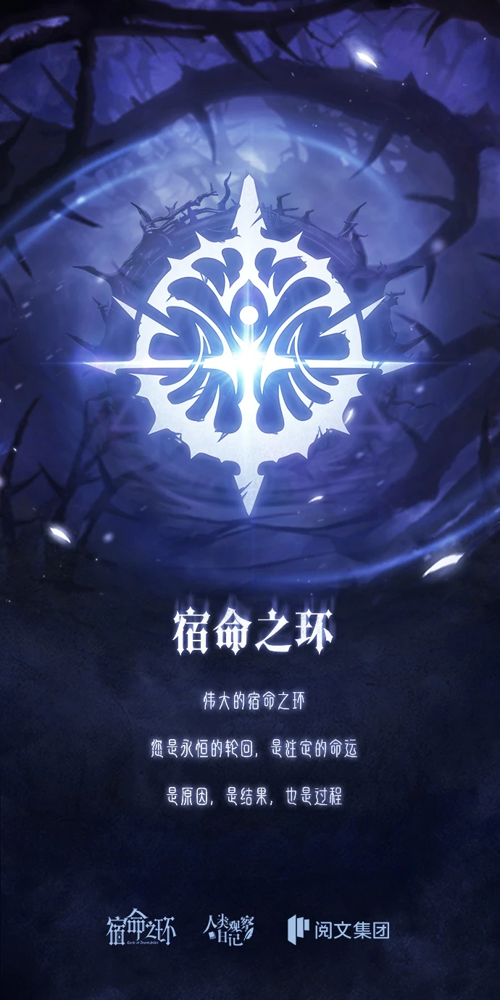

Overview
The Circle of Inevitability will bring calamity but is also the universe's most powerful and genuine Angel of Redemption.
The Genie, Book 2, chapter 1127
The Circle of Inevitability is one of the Outer Deities from the Cosmos that attempted to invade Earth. "He" is the current owner of the Eternal Aeon Pathway.
Honorific Name
The Eternal Cycle; The Predestined Destiny; Embodiment of Cause, Effect, and Process; Symbol of Past, Present, and Future (永恒的轮回， 注定的命运， 原因、结果与过程的化身， 过去、现在和未来的象征)
Note: During prayers and rituals, the latter two segments may be adapted in various ways.1
Symbols, Authorities & Abilities
TRANSLATION NOTE "注定" (Zhùdìng) is sometimes translated to "Destined" / "Destiny" / "Predestined", and sometimes translated to "Inevitability" in the official Webnovel English translation.
"循环" (Xúnhuán) is sometimes translated to "Cycle", and sometimes translated to "Loop".
"He" possesses full Authority over the Eternal Aeon and the corresponding Symbols, which include but are not limited to the following:
- Eternal Aeon: Authorities over Inevitability and Cycle.3Book 2, chapter 1174
The Symbols, Authorities, and Abilities "He" possesses and displays at the Above the Sequence level include:
- '''Redemption (
- This is "His" greatest and most fundamental symbolism and perhaps the reason "He" had been born as the child of the Original Creator and the Mother Goddess of Depravity.5Book 2, chapter 11754
- '''Destined / Inevitability (
- "He" could make it so that all external forces attempting to interfere with Project Vortex would Inevitably fail, except for the participants themselves.7Book 2, chapter 867
- When a conclusion was bound to be bad, steering it toward a lesser evil was far easier than reversing it to something good.8Book 2, chapter 1111
- The Circle of Inevitability fixed Lumian's destiny on madness, and not on complete destruction. This prevented his body from collapsing when he was forcefully merged with Alista Tudor's Mirror Person, the Primordial Demoness' Sequence 1 characteristic, and the masculine and feminine aspects of the Mirrored Original Creator.8
- When being targeted by the Calamity of Destruction Lumian's Sword of Destruction, the Future body of the Circle of Inevitability selected and anchored one tributary of the River of Fate, causing the Sword of Destruction to narrowly miss, grazing "His" body.9Book 2, chapter 1166
- Amid the double Calamities from Lumian - a Chaos Vortex and a Black Hole - the three continuously orbiting bodies of the Circle of Inevitability resembled a small boat in a tempestuous sea, always precariously skimming the vortex and black hole's uncertain regions and weak spots- dangerously close yet never succumbing, as if Predestined to remain unaffected here.9
- "He" could not fix the tributary of fate representing "His" successful accommodation of the Key of Light (Sefirah), which is unfixable. This is because, as the embodiment of fate, the Key of Light would have absolute good fortune at critical moments, disrupting any attempts to accommodate "Him".6
Jiùshú)''': "He" symbolizes the possibility of salvation in apocalyptic crises brought about by the inherent chaos of destiny, and the correction of this chaotic nature, allowing the universe to continue in relative stability and development until its ultimate end.4Author's WeChat post coi
Zhùdìng)''': "He" can select and anchor one tributary of the River of Fate that "He" chooses.6Book 2, chapter 1172
- '''Cycle / Loop (
- "He" reverted the battlefield to the moment before Lumian created the Fog of War, before the Monarch of Decay fell into madness and chaos due to the effect of the Origins of Disaster and Mirrored Original Creator symbolisms, before the Eternal Darkness Amanises was affected by the Inextinguishable Ravings and had to put "Herself" in a Slumber.
- Lumian and Amanises had nearly succeeded three times to swiftly wound or eliminate the Monarch of Decay, but each time, the Circle of Inevitability had intervened-either resetting the state through Loop or exerting influence via the symbolism of Inevitability.2
Xúnhuán)''': "He" can use "His" Circle Inhabitant's power to reset the state of a region, including other Great Old Ones.10Book 2, chapter 1167
- '''Present (
- "He" can reenact the massive suction force that happened to "Him" when "His" Sefirah was being forcibly pulled during the Original Creator's awakening onto the Calamity of Destruction Lumian. This caused his Sword of Destruction to divert away from the intended target and pulled it toward "Him" instead.9
- If "He" had experienced the suction force that the Original Creator's three direct children experienced, this would have caused Lumian to suffer tremors in his Sefirah, rendering him weak and incapable of using his powers for a short time-even if his Sefirah wasn't wholly extracted or partially consumed.9
Xiànzài): "His" Present Self''' can use the Sufferer's power to reenact "His" past torments and impose them upon "His" enemy.9
- '''Past (
- What was not lost in the Past could not be destroyed in the Present.2
- Even when "His" three bodies are destroyed, "His" Past Body can reappear a second later and reunite with "His" Present Body and Future Body.2
- Only by using the kind of power associated with the Fourth Pillar- erasing the very concept of the Circle of Inevitability's existence and "His" Past history-could "He" be truly wounded or killed.2
- The Past symbolism allows "Him" to bring only "His" past self into situations such as entering Lumian' body to resolve the Termination symbolism.12
- Thus, even if "He" successfully accommodated the Monarch of Decay or vice versa, "They" would still be able to return daily to resolve the problem without triggering Termination.
Guòqù): "He" possesses the symbolism of the Past'''.
- '''Future (
- When the future was already determined, and every tributary led to the same outcome where the Termination symbolism would appear, the Circle of Inevitability created a new tributary capable of preventing its appearance.
- "He" can combine the symbolisms of Future and Destined:
- The combination of these two symbolisms makes "Him" nearly impossible to hit.2
- When being put into a slumber by the Eternal Darkness' symbolism of Darkness, "He" used the symbolisms of Future and Destined to manifest countless tributaries of fate before "Him", each representing the same possibility: that "He" would soon awaken.6
Wèilái): "His" Future Redemption Body''' can create a new tributary within the River of Fate where no other possibilities or developments existed.
- '''Eternal Aeon (
- "He" used "His" Eternal Aeon symbolism to stop the power of Termination within Lumian's body to sublimate into the Termination symbolism, and achieve Redemption:5
- "His" three bodies simultaneously bore the ravages of the power of Termination. Then, the three bodies encircled the deep black point held in six palms, and began to spin faster and faster. The black turned into mercury, mercury became transparent redemptive light, and the light was dyed black again, repeating over and over.5
- Before long, the pitch-black Past Sinner Body morphed into the initial scene of the Termination power's formation. The mercury-colored Present Sufferer Body stabilized the current event of destruction. The holy light-formed Future Redemption Body froze the moment when the Termination symbolism was about to emerge but had not yet fully formed. Then, the Future Redemption Body, spinning rapidly, became dyed black once more, transforming into the scene corresponding to the Past Sinner Body, completing the Redemption.5
Yǒngjié zhě): the unity of Past, Present, and Future, as well as Cause, Process, and Effect'''.4
- '''Substitution (
- The Past Sinner Body caused the figures of the Monarch of Decay within the River of Fate's Past to be replaced one by one with figures of the Circle of Inevitability and vice versa, while "His" Present Sufferer Body separated a Sequence 1 body to switch with the Monarch of Decay's body within Lumian in the Present. One returned to the outside world, and the other entered within, completing the Substitution.
- Now, Lumian no longer accommodated the Monarch of Decay but rather a Sequence 1 avatar of the Circle of Inevitability, slowing the formation of the Termination symbolism within Lumian's collapsing body but doesn't stop it.5
- In the River of Fate, "His" images, which originally belonged to the Monarch of Decay, had been replaced by "His" own through the influence of the Substitution symbolism. This created a profound mystical link between "Him" and the Monarch of Decay, allowing "Him" to discover the Monarch of Decay's whereabouts and pursued after "Him".5
Tìdài): "He" holds the Substitution '''symbolism, the highest level of the Substitution Spell.
Countering Symbols, Authorities & Abilities
Certain Symbols, Authorities, and Abilities of other Great Old Ones can counter some of "His" powers, which include but are not limited to the following:
- Lord of Mysteries:
- King of Space-Time counters Past, Present, and Future.
- The King of Space-Time, who held the symbolism of History, might not be able to kill the Circle of Inevitability but could certainly inflict suffering worse than death.2
- Theft, with the help of the Key of Light, counters Past.
- The Lord of Mysteries and the Key of Light combined can replace, supplant or use various other methods to eliminate the Circle of Inevitability and make someone ascend and take "His" place. The only problem is having to permanently resist "His" reviving consciousness.13
- Beacon of Destiny counters Cycle.11
- Error counters Destined.
- Key of Light:
- Incarnation of Fate counters Destined:
- The Key of Light would inevitably have absolute good fortune at critical moments, disrupting any attempts to accommodate "Them". The Circle of Inevitability did not fix the tributary of Fate representing "His" successful accommodation of the Key of Light—it was simply unfixable.14
- Eternal Darkness:
- Space-Time-in-One can delay and halt Destined and Cycle:
- Amanises unleashed deep darkness like a river from the void, pulling Time and Space into "Herself" and merging them swiftly. This managed to halt the Circle of Inevitability's spinning, suspending "Him" like an insect trapped in amber, preventing "Him" from triggering a Loop node.2
- Amanises plunged the Uniqueness of Twilight Giant into the darkness edge and into the void, causing the dense darkness to contract, and the flow of time to slow, converging toward a single point. The fate of the Circle of Inevitability's Destined awakening remained unchanged but was now delayed, pushed several seconds into the future.6
- River of Eternal Darkness counters Cycle:
- The River of Eternal Darkness is a river that never Loops. It always moved forward. Even death itself would dissipate within its currents. The colorless, illusory river can submerge all Loop nodes, causing them to instantaneously perish and vanish without taking effect.6
- Calamity of Destruction:
- Return of All Things to Chaos counters Destined and Cycle:
- Lumian Lee formed a Vortex of Chaos to drag the fixed tributary of the River of Fate and the pre-set Loop node into the Apocalypse, returning it to Chaos, thereby breaking the Circle of Inevitability's Destined and Cycle powers.2
Appearance
True Form: "He" was formed by three bodies arranged in a circle. The one facing left was pitch black, with a sinister, malicious visage seemingly composed of the deepest, most chaotic sins. The one facing forward was silvery, emaciated, and filled with pain. The one facing right radiated pure, redemptive holy light, emanating solemnity and compassion toward all things. The light of the three bodies intertwined into a silvery-black hue. 15
Personality
Due to "His" symbolism of Redemption, "He" is one of the few Outer Deities capable of the desire to save/grant salvation to lesser races.16 "His" Godhood Instincts would compel "Him" to perform Redemption, but only during cosmic catastrophes like the premature appearance of the Fourth Pillar before the universe reaches its natural end.5 In other scenarios, "He" could remain either malevolent or neutral.17 "He" can bring calamity, but is also the universe's most powerful and genuine Angel of Redemption.18
Background
According to the Seven Lights, ever since the Oldest One awakened and split apart, the most powerful Outer Deities in the entire universe, including the Circle of Inevitability, gathered around this tiny solar system.
Some of "Them" wish to retrieve "Their" Sefirot and Beyonder Characteristic that had been ripped from "Them" and were attracted here. Some of "Them" have the hope of getting neighboring Sefirot and high-level Beyonder Characteristics which "They" can accommodate.19
The Circle of Inevitability coveted the Key of Light (Sefirah) the most. However, the City of Calamity and the River of Eternal Darkness were also within "His" scope, as these pathways symbolized destined conclusions and various calamities. Additionally, similar to the High-Dimensional Overseer, if the Lord of Mysteries were defeated in a joint effort, the Circle of Inevitability would not shy away from seizing control of Sefirah Castle and accommodating the Uniquenesses of the Fool and Error Pathways. 11Book 2, chapter 1164
History
The Circle of Inevitability is the eldest son of the Original Creator and the Mother Goddess of Depravity.20 Before the First Epoch, the Circle of Inevitability and the Goddess of Fate frequently fought each other.21 Even thought the Mother Goddess of Depravity favored the Goddess of Fate, the reason why "She" didn't help "Her" was because the universe needed the Circle of Inevitability's Redemption Symbolism.22
When the Original Creator awoke and split up, "He" was also affected by the Law of Convergence. "He" endured great suffering to prevent "His" Sefirah from being forcibly extracted or split.9
In the First Epoch, during the Lost Era, the Primordial God Almighty and Celestial Worthy's strong and still-perfect-and-whole power deterred the Outer Deities, who can only settle for observing Earth from afar for now.23
In 1358 of the Fifth Epoch, the Circle of Inevitability succeeded in sending one of "His" Angels, Termiboros, to the planet via a descent ritual in Cordu Village of the Intis Republic. However, Termiboros was sealed inside Lumian Lee's body by The Fool.
During Project Vortex, the Circle of Inevitability transmitted a bit of "His" power through the barrier via the Endless Cosmos. All external forces attempting to interfere with Project Vortex would inevitably fail, except for the participants themselves.7 In the end, Project Vortex ended in failure for all Outer Deities except the Mother Goddess of Depravity and Mother Tree of Desire. "His" believers and Boon Recipients were almost completely wiped out.
During The Apocalypse, "He" assisted the Monarch of Decay and fought against Lumian Lee and Amanises. During the fight, Lumian and Amanises had nearly succeeded three times to wound or eliminate the Monarch of Decay, but each time, the Circle of Inevitability had intervened by either resetting the state through Loop or exerting influence via the symbolism of Inevitability.2
When Lumian began irresistibly merging with the Monarch of Decay and was about to cause the formation of the Fourth Pillar, the Circle of Inevitability intervened by using the Substitution symbolism to replace the Monarch of Decay within the River of Fate's past with an Angel of Redemption Characteristic. "He" then used "His" true body to replace the avatar, personally entering Lumian's body to face the encroaching power of Termination. Using "His" Eternal Aeon symbolism, the Circle of Inevitability achieved Redemption. "He" then replaced "His" external Sequence 1 avatar to replace "His" true body once again, sealing it within Lumian's body, while the true body returned to reality.
From now on, the Angel of Redemption avatar would slow the transformation of Termination power within Lumian into Termination symbolism. It would also assist in balancing the consciousness and spirit of the reviving Malevolent Dragon. When the delayed transformation once again reached a critical stage, the true body of the Circle of Inevitability would replace the avatar, enter Lumian's dreamscape, and use the Symbolism of Eternal Aeon to reset the crisis to its initial state. In essence, every day, "His" true body would endure destruction alongside Lumian due to the Termination power. This cycle would repeat daily, eternally.
After resolving the crisis, the Circle of Inevitability departed for the Astral World to chase after the fleeing Monarch of Decay, using the mystical connection that was established through the previous use of the Substitution symbolism.24
Trivia
- Book 2 in the Mysteries series is named after this Outer Deity.
Translations
| Language | Name |
|---|---|
| Chinese | 宿命之环 |
| Thai | วงแหวนชะตากรรม |
References
- Author's WeChat post coi.
- Book 2, chapter 1170.
- Author's WeChat post coi.
- Book 2, chapter 1175.
- Book 2, chapter 1172.
- Book 2, chapter 867.
- Book 2, chapter 1111.
- Book 2, chapter 1166.
- Book 2, chapter 1167.
- Book 2, chapter 1164.
- Author's WeChat post moon_formulas, part 18.
- Author's WeChat post tyrant_formulas, part 32.
- Book 2, chapter 1177.
- Book 2, chapter 1165.
- Author's WeChat post mgod, part 1.
- Author's WeChat post mod, part 29.
- Book 2, chapter 1127.
- Book 1, chapter 1271.
- Author's WeChat post giant_formulas, part 54.
- Author's WeChat post mtod, part 2.
- Author's WeChat post coi, part 34.
- Author's WeChat post history.
- Book 2, chapter 1175.
Source
Article adapted from the Circle of Inevitability article on the Lord of the Mysteries Fandom wiki (CC BY-SA). Chapter numbers follow that article's citation format.
Image gallery
